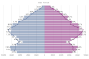

This page collates all the outputs we have produced containing data from the census conducted in 2021.
The census is a survey undertaken by the Office for National Statistics (ONS) that happens every 10 years and gives a picture of all the people and households in England and Wales. Census Day was on Sunday 21 March 2021 and Trafford's response rate for usual residents was 98%. You can find further information about the census 2021 from the ONS, including their proposed timeline for publishing the data. Following each release we will be creating and updating our outputs concerning Trafford and publishing them here.
: Census 2021 first results
Census 2021 first results include five datasets containing population and household estimates for England and for Wales, rounded to the nearest 100, at local authority level. These are:
- usual resident population by sex
- usual resident population by 5-year age group
- usual resident population by sex and 5-year age group
- usual resident population density
- number of households
The initial findings from the 2021 census in England and Wales are available from the ONS, including a rounded population and household estimates statistical bulletin and an animated visualisation report on how Trafford's population has changed since 2011. You can find outputs specific to Trafford and its surroundings derived from the ONS data below.
Infographics
Reports
2021 Population & Households in Trafford
Following the first release of data from the 2021 census, this report contains analysis of the change in Trafford's population and households from the previous census, and provides comparisons with the other local authorities in Greater Manchester.
Data

Open Datasets
Datasets in CSV format containing population estimates by sex and 5 year age band, population densities and household estimates for Trafford and each of the Greater Manchester (GM) authorities.
Notes
- Within the outputs provided, the variable name "sex" refers to the assignment at birth based upon an individual's biological aspects, and "gender" refers to an individual's personal, internal perception of themselves (ONS: What is the difference between sex and gender?). Further information is provided by the ONS in: Sex and gender identity question development for Census 2021
- Population and household estimates are rounded to the nearest 100, therefore discrepancies can occur e.g. between the sum of population by age bands and the total population figure